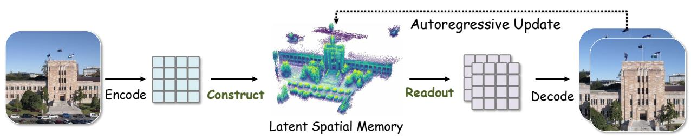
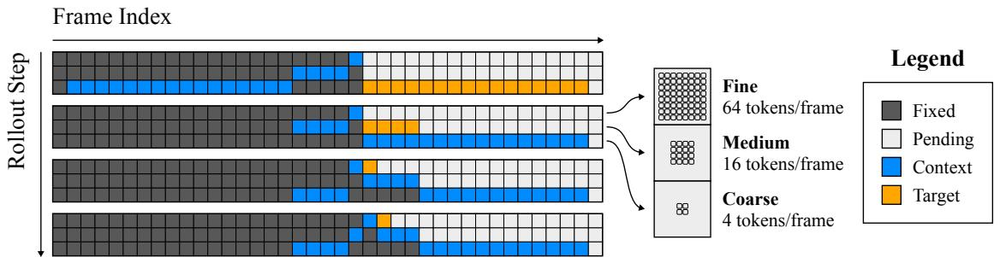

今日主线 · arXiv recent-list补漏 + project
Latent Spatial Memory for Video：把视频 world model 的跨帧记忆从 RGB/点云搬到 diffusion latent，直接触及可复用视觉 latent 与长期一致性
把视频 world model 的跨帧记忆从 RGB/点云搬到 diffusion latent，直接触及可复用视觉 latent 与长期一致性。

把视频 world model 的跨帧记忆从 RGB/点云搬到 diffusion latent，直接触及可复用视觉 latent 与长期一致性。

高相关；详见方法、贡献和实验边界。
方法：把视频 world model 的跨帧记忆从 RGB/点云搬到 diffusion latent，直接触及可复用视觉 latent 与长期一致性
 P0
P0
高相关；详见方法、贡献和实验边界。
方法：明确使用自监督视觉 encoder 的 clean-image representation 监督 diffusion features，并讨论 token-level 对齐偏差
 P1
P1
高相关；详见方法、贡献和实验边界。
方法：少数直接面向图像 SSL objective 的新作，目标是降低大 batch、memory bank、momentum encoder 等训练复杂度
 P1
P1
中高相关；详见方法、贡献和实验边界。
方法：把 JEPA latent dynamics 用到更长程规划，并引入 action-free latent planner 作为子目标预测器

P1中高相关；详见方法、贡献和实验边界。
方法：用层级 frame tokens 处理视频长程一致性，和视觉 tokenizer/RAE/world model 的 latent 设计高度相关